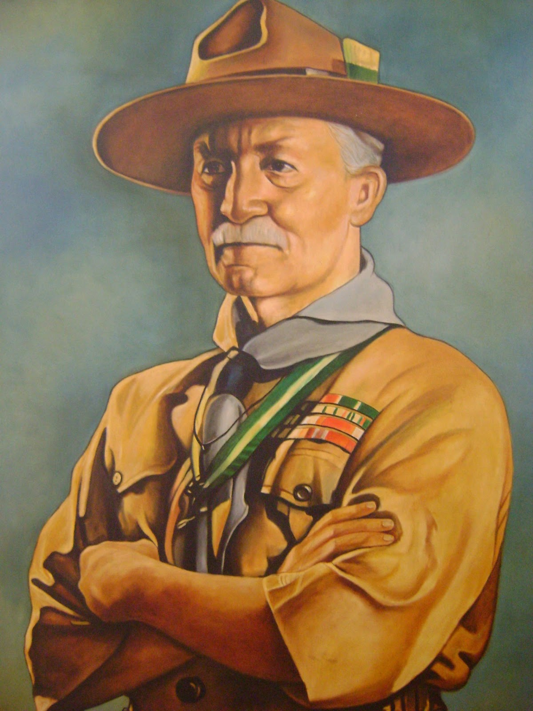

Robert Stephenson Smyth Baden-Powell
El hombre que fundó el movimiento más grande en el mundo

Retrato de Baden-Powell
Aqui está una una linea de tiempo de su vida
- Nace el 22 de febrero de 1857 en Londres
- A los 8 años escribe una carta para si mismo cuando sea viejo
- En 1870 recibe una beca para estudiar en una prestigiosa escuela
- En 1876 se alista en el ejército
- En 1878 fue ascendido a teniente por destacarse en rastreo y exploracion
- En 1888 recibe el apodo de impeesa por su campaña contra los zulúes y los ashantis
- En 1899 defendio la ciudad asediada de Mafeking
- En 1901 es ascendido a mayor general por la reina Victoria. Cuando volvió al Reino Unido era popular ya que su libro era usado en las escuelas
- En 1907 se realiza el primer campamento Scout en Brownsea
- En 1908 se publico el libro "escultismo para muchachos"
- En 1909 adquiere el titulo de Sir por el rey Eduardo VII que lo nombra caballero
- En 1920 se celebra el primer Jamboree en Londres, donde es proclamado Jefe Scout Mundial
- En 1941 muere en Kenya